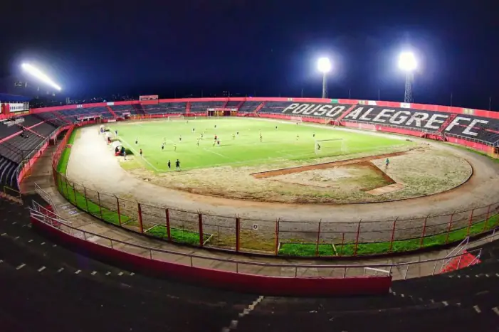

Fundação
O Pouso Alegre Futebol Clube foi fundado no dia 15 de novembro de 1913, com o nome de Pouso Alegre Football Club. Naquele dia foi realizada uma reunião na casa de Alfredo Ennes Baganha - primeiro presidente do Pouso Alegre - para fundar o clube e assim começar a escrever a história do futebol pousoalegrense.
No entanto, naquela época era difícil manter um clube em atividade por muito tempo. Devido a isso, no final da década de 1910, o Pouso Alegre caiu no esquecimento. Somente em 1928, o rubro-negro voltou a ter relevância. Ajudado por um grupo de diretores, o clube viria a conquistar a sua maior glória até aquele momento.
Estádio
No dia 28 de setembro de 1928, reunidos no Fórum de Pouso Alegre, Alfredo Baganha e José Nunes Rebello, lavraram a ata de compra de um terreno localizado no alto da
A partir disso, já na década de 1930, muitos times paulistas começaram a jogar no Campo do Pouso Alegre. Guarani, Ponte Preta e o Extinto Ypiranga foram um dos exemplos de times que passaram por Pouso Alegre. Nessa mesma época, foram criados e disputados vários torneios intermunicipais. Atualmente, o estádio do Pouso Alegre é o Estádio Municipal Irmão Gino Maria Rossi (Manduzão), com capacidade atualmente para 26 mil pessoas.
A partida entre Pouso Alegre e Atlético-MG, pela 8ª rodada do Mineiro 2022 marcou o recorde de público no Manduzão. Foram 12.113 pessoas no estádio. A renda do jogo foi R$ 249.798,00.
Primeira interrupção
No final da década de 1940, mais precisamente no ano de 1947, foi fundada a Liga Esportiva Municipal de Amadores (LEMA). A entidade, que teve como primeiro presidente Pardal Vilhena de Alcântara, passou a organizar essas competições e muitos times amadores apareceram na cidade, fazendo frente do Pouso Alegre.

Com o fortalecimento de outros times na cidade, o Pouso Alegre acabou entrando em recesso das competições amadoras no início da década de 1950. Com isso, a Liga passou a administrar o Estádio do Pouso Alegre, o que levou a todos a chamarem de Estádio da LEMA. Nesse mesmo período, foram construídos os primeiros lances de arquibancada e o muro que cerca o gramado.